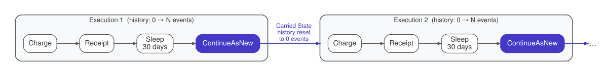

The Perpetual Execution (Living Process)
Run a durable workflow indefinitely by periodically resetting its execution history while carrying forward minimal essential state.
Intent. Some processes must run forever: subscription billing, monitoring
agents, rate limiters, cron replacements. Durable workflows accumulate event
history with every activity, signal, and timer, and that history eventually
degrades replay performance and approaches platform limits. The Perpetual
Execution pattern uses a continue-as-new mechanism (ContinueAsNew in Temporal) to periodically compact history while
preserving the workflow’s logical continuity.
Motivation. A SaaS company charges subscribers monthly. Each subscriber has a workflow that charges their card, handles declined payments with retry logic, sends a receipt, and sleeps until the next billing date. The subscription may last years. A subscriber who joined in 2022 and is still active in 2026 has been billed 48 times.
Each billing cycle generates events in the workflow’s history: a timer event for the sleep, a scheduled-activity event for the charge, a completed-activity event with the result, another pair for the receipt, and so on. After 48 cycles, the history has hundreds of events. A billing system managing millions of subscribers will have workflows at every age — even moderate 3-5 year subscriptions accumulate thousands of events, and the fleet-wide distribution always includes workflows with very large histories.
Durable execution platforms impose history size limits — Temporal’s default is 50,000 events per workflow execution, and replay time is proportional to history size. Long before you hit the hard limit, replay becomes slow — a workflow with 10,000 events takes noticeably longer to recover after a worker restart than one with 100. If your billing workflows share workers with other workflows (they usually do), the slow replays affect the entire worker pool.
The solution is to periodically restart the workflow with a clean history. This is what ContinueAsNew does: it terminates the current execution and immediately starts a new one with the same workflow ID, using only the state you explicitly pass as input. The new execution has zero events in its history. From the outside, the workflow appears to be the same continuous process — same ID, same logical identity — but internally it’s a fresh execution.
The Pattern

The perpetual workflow runs one iteration of its work — one billing cycle, one monitoring check, one cron tick — then calls ContinueAsNew with the current state as input to the next execution. The carried state is a minimal data structure (a record or struct) containing only what the next iteration needs: subscription ID, billing amount, cycle count, configuration. You want it as small as possible because it’s serialized as the new execution’s input. From the caller’s perspective nothing changes — same workflow ID, same logical identity — but internally the runtime discards the old history and starts fresh.
Traditionally, you’d build this as a cron job backed by a database. A scheduled task polls for subscriptions due for billing, charges each card, updates the next billing date, and handles retries through status flags and counters. If the job crashes mid-batch, some subscriptions get charged but not updated — risking double charges unless you’ve wired up idempotency keys. If the scheduler itself misses a cycle, you need gap-detection logic to figure out what was missed and whether to back-fill. It works, but the retry, recovery, and idempotency logic is entirely manual and lives alongside your business code.
With Durable Execution. Each subscription is a workflow that runs indefinitely:
@Override
public void run(BillingState state) {
// Process this billing cycle
activities.chargeSubscription(state.subscriptionId(), state.amount());
activities.sendReceipt(state.subscriptionId(), state.email());
// Sleep until next billing cycle
Workflow.sleep(Duration.ofDays(30));
// ContinueAsNew: fresh execution, clean history, carried state
BillingState nextState = new BillingState(
state.subscriptionId(),
state.email(),
state.amount(),
state.cycleCount() + 1);
Workflow.continueAsNew(nextState);
}The run method processes one billing cycle: charge the subscription, send a
receipt. Then it sleeps for 30 days — a durable sleep that survives worker
restarts, deployments, and infrastructure failures. When the sleep completes,
the workflow calls Workflow.continueAsNew(nextState), which terminates the
current execution and starts a fresh one with the same workflow ID.
The BillingState record carries forward only what the next cycle needs:
subscription ID, email, amount, and a cycle counter. The new execution starts
with zero event history and a single input event containing this state. It
doesn’t matter that the previous execution had 20 events from the charge,
receipt, and sleep — those are discarded. The logical workflow is continuous
(same ID, same identity), but the physical execution is fresh.
If the worker crashes during chargeSubscription, the runtime replays the
workflow on another worker and retries the activity. If the activity itself
fails (the card is declined), the retry policy on the activity options controls
the behavior — retry with backoff, up to a maximum number of attempts. If all
retries are exhausted, the activity throws and the workflow can decide what to
do: send a dunning notice, pause the subscription, or escalate to a human. This
is ordinary Java code inside the run method, not a separate state machine or
database flag.
Consequences. The Perpetual Execution pattern gives a workflow an effectively unlimited lifetime without unbounded history growth. Each ContinueAsNew resets the history to zero, so the replay cost stays constant regardless of how many cycles the workflow has completed.
The most important trade-off is the ContinueAsNew boundary. When a workflow calls ContinueAsNew, the current execution terminates and a new one starts. Event handlers (signals and queries in Temporal) registered in the current execution aren’t carried over — the new execution must re-register them in its initialization code. Temporal handles in-flight signals correctly: signals sent during the transition are buffered and delivered to the new execution. However, queries issued during the brief transition window will fail because no execution is actively running to handle them. For workflows that serve queries (Entity-style workflows using Perpetual Execution for compaction), this means a short period of query unavailability at each boundary — typically milliseconds, but observable under high query load.
The carried state must be small. It’s serialized as the input to the new execution, subject to the platform’s payload size limit (4 MB in Temporal) as any other workflow input. If your perpetual workflow accumulates large state over time (a growing list of processed items, a cache of historical data), you need to trim it before calling ContinueAsNew or offload it to external storage.
Distinction from the Entity. Both patterns produce long-lived workflows, but they solve different problems. The Entity (Chapter 1) models a stateful domain object sitting in an event loop, accepting commands and answering queries. The Perpetual Execution pattern is about history management — it’s the mechanism an Entity (or any long-running workflow) uses to stay healthy over time. In practice, many Entity workflows use Perpetual Execution internally for compaction, but the two concerns are orthogonal: you can have a perpetual workflow that isn’t an Entity (a cron replacement), and a short-lived Entity that never needs ContinueAsNew.
Known Applications
-
Subscription billing — one workflow per subscriber, ContinueAsNew each cycle
-
Cron replacement — a workflow that runs a task on a schedule, indefinitely
-
Monitoring agents — periodic health checks with alerting
-
Rate limiters — per-user or per-API-key rate tracking with windowed state
-
Heartbeat services — "I am alive" signals sent on a schedule
Related Patterns
-
The Entity (Chapter 1) — long-lived entities use Perpetual Execution for history compaction when they run indefinitely
-
The Durable Observer (Chapter 9) — observers that run perpetually use this pattern for history management
-
Execution Singleton (Chapter 4) — perpetual workflows are almost always singletons, one per business key